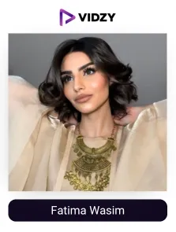
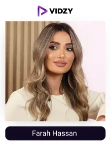
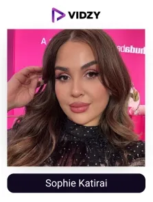
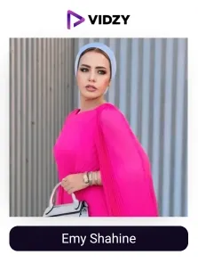
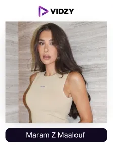
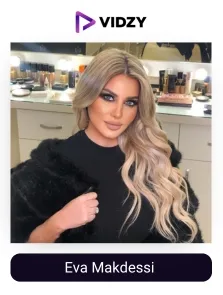
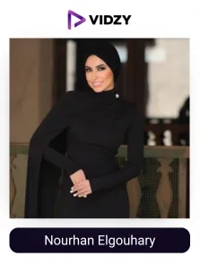
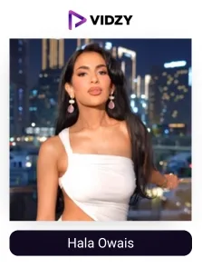
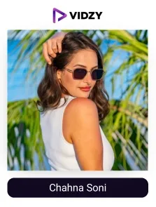
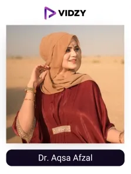

Beauty has a special place in our lives. Looking and feeling good is often seen as a reflection of confidence and self-care. In Dubai, a city known for its glamour and modern lifestyle, people highly invest in beauty and makeup products to look and feel their best. And this rising demand, together with the UAE's strong economy, has led to the remarkable growth of the beauty industry in the UAE.
According to studies, the beauty industry in the Middle East is expected to reach $60 billion in 2025. Consumers are eager to explore and invest in new beauty trends and quality products, for which they are increasingly depending on social media platforms for inspiration and guidance.
The talented beauty influencers in the UAE, with their informative, authentic and trustworthy content, as beauty tutorials, tips, reviews, etc., showcase the products in real-life experiences and nurture their community, thereby influencing their beauty routines and purchasing decisions.
Their organic content and word-of-mouth marketing build trust, boost engagement, and turn passive viewers into loyal customers, making them valuable partners for beauty brands. (Vogue Business)
With this, beauty and cosmetic brands in the UAE are teaming up with beauty influencers in Dubai to accomplish their marketing goals. As the leading UGC agency in Dubai, we have curated a list of the UAE’s best beauty UGC creators, after conducting thorough research and review, to help brands connect with the right voices for their campaigns.
Explore below the list of top beauty UGC content creators in Dubai, UAE!
Top 10 Beauty UGC creators in Dubai
Contents
-

1. Fatima Wasim
Channel: Fatima Wasim
Followers: 938KEngagement Rate: 1.37%About The Influencers-
Fatima Wasim is a famous beauty influencer in Dubai. She shares her experience and knowledge on makeup, beauty, and fashion with her followers. She has worked with top beauty brands like Too Faced and Sephora. Fatima shares about ingredients and the proper usage techniques with products to help her audience make better beauty choices.
She also supports clean and sustainable beauty. Her Instagram feed inspires others to take care of their skin nd feel confident in it.
-

2. Farah Hassan
Channel: Farah Hassan
Followers: 1MEngagement Rate: 1.39%About The Influencers-
Farah is a beauty influencer based in Dubai. Audience loves her content for its easy and simple makeup looks, skincare tips, and outfit ideas. Her content is a guide for knowing new products and various beauty routines. She also shares her luxurious lifestyle with her followers.
Farah always tries new beauty and makeup hacks to keep her content fresh and interesting. She has worked with top brands like Palazzo Versace, Sephora, and Carolina Herrera.
-

3. Sophie Katirai
Channel: Sophie Katirai
Followers: 781KEngagement Rate: 1.24%About The Influencers-
Sophie is a well-known beauty content creator. She shares updates about new makeup and skincare products with her followers. She is the owner of @sophiescloset. Sophie beautifully blends her love for beauty, tech, and creativity.
She is also involved in the creative side of the beauty world. She uses makeup, beauty, and AR filters on platforms, giving her followers amazing experiences of interactive beauty content.
-

4. Emy Shahine
Channel: Emy Shahine
Followers: 754KEngagement Rate: 1.03%About The Influencers-
Emy Shahine is a popular beauty influencer living in Dubai. She shares makeup tutorials, skincare tips, and stylish outfit ideas. Emy is also a TV presenter and brand ambassador. She had collaborated with various fashion and beauty brands. She provides fashion inspiration, showcasing her personal style and outfit choices.
-

5. Maram Z Maalouf
Channel: Maram Z Maalouf
Followers: 1.1MEngagement Rate: 1.37%About The Influencers-
Maram Maalouf is a famous beauty influencer in Dubai. She mostly shares about fashion, beauty, and her experiences as a mother. She also shares her travel journeys to fashion capitals with her followers. Maram is the founder of Maison Celadora. She has worked with many luxury brands like Dior and Givenchy.
Through her years of hard work and engaging content delivery, she has formed a beauty-enthusiastic community in the UAE.
-

6. Eva Makdessi
Channel: Eva Makdessi
Followers: 950KEngagement Rate: 1.02%About The Influencers-
Eva Makdessi is a popular beauty and skin consultant living in Dubai. She is the ambassador to the world of organisation and peace. She is also the CEO of @ellemaraa Magazine. Her Instagram feed displays makeup tutorials, skincare tips, and fashion insights for her followers. She shares her experience of the usage of different beauty products and devices.
She has been featured in many media outlets. Eva also shares glimpses into her lifestyle, shares beautiful moments from her daily life, and travels.
-

7. Nourhan Elgouhary
Channel: Nourhan Elgouhary
Followers: 806KEngagement Rate: 1.17%About The Influencers-
Nourhan Elgouhary is a beauty and fashion influencer based in Dubai. She shares simple makeup looks, skincare tips, and modest fashion ideas with her followers. She also shares moments from her life as a mom. She had worked with popular beauty and fashion brands, like SOTHYS, Axis, Prada, Chanel, Mars, and Armani.
Her feed is enjoyed by her followers who love to indulge in her love for beauty, fashion, and lifestyle.
-

8. Hala Owais
Channel: Hala Owais
Followers: 933KEngagement Rate: 1.93%About The Influencers-
Hala Owais is a popular beauty influencer in the UAE. Her audience loves her easy-to-follow makeup tutorials, quick skincare tips, and fashion ideas.
She is the owner of a beauty brand called "Hala Lashes," which provides false eyelashes. Hala's posts are loving are fun, friendly, and full of beauty tips. She had collaborated with many top brands like Bobby Brown, Swissarabian, and Alya skin.
-

9. Chahna Soni
Channel: Chahna Soni
Followers: 678KEngagement Rate: 15.61%About The Influencers-
Chahna Soni is a well-known content creator based in Dubai. She produces content regularly about various cosmetic, skincare procedures, and also offers fashion insights since her follower base focuses on beauty and lifestyle trends. Known for her engaging posts on beauty, health, motherhood, and pet parenting.
Through her Instagram, she provides detailed instructions about various makeup methods and appearance variations. Her content often highlights her collaborations with brands such as Maate, Momcozy, and FRIGG. She also supports natural and sustainable products.
-

10. Dr. Aqsa Afzal
Channel: Dr. Aqsa Afzal
Followers: 695KEngagement Rate: 1.55%About The Influencers-
Dr. Aqsa Afzal is a prominent beauty and lifestyle influencer living in Dubai. She is the CEO of Waliqsa. She shares content on personal style, skincare routines, and lifestyle moments. She is a talented doctor who has won gold medals in medical science.
Afzal has collaborated with various brands, including Shein, Knorr, Lux, Lavien Rose, etc.
Conclusion:
In Dubai, the top beauty UGC creators are transforming the way consumers discover and connect with beauty brands. With authentic product reviews, skincare tutorials, and glam transformations, these creators make beauty feel accessible, inclusive, and exciting. Their ability to break down trends and explain products in a relatable way helps consumers make better beauty.
These beauty experts have built trusted communities, making them the trusted voices for both beauty lovers and leading brands. Through captivating images and honest storytelling, they bridge the gap between brands and consumers and create meaningful connections that drive visibility and sales.
As the leading UGC agency, we specialise in matching beauty brands with the most impactful UGC creators in Dubai, who embody trust, authenticity, and influence. Together, we craft compelling beauty content that resonates with the audience and reap remarkable results for the brands.
Want to elevate your beauty brand with powerful, authentic content? Let’s connect and achieve the goals with Dubai’s top beauty voices!